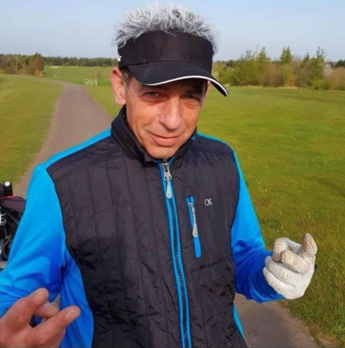

We lost our friend Jim Stamas to Pancreatic Cancer on the 12th of July 2020. To honour his memory, we are hosting the 5th Jim Stamas Memorial Cup
Jim was a County table tennis player and avid golfer and a friend of many of you playing today.
Jim was also the owner of the Simply Greek restaurant in the Big Market and was a gregarious, plate-smashing, Greek-dancing host who loved to entertain.
He was fiercely competitive both in golf and table tennis and always played to win.
However he was a friend to all and is greatly missed.
Cancer is a cruel disease and respects no one.
Thank you for your support for a worthy charity and I hope you have great day.
- Dale
